~6 Continuing to Learn More Techniques~
9/29/2025
Move the Cursor to the Selected point
Moving the Cursor to the Vertical Center of View Port
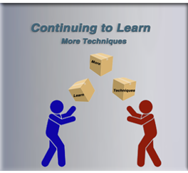
The Starting Point
Once again, we are starting off from our last tutorial. So, your shape right now should be looking like this.
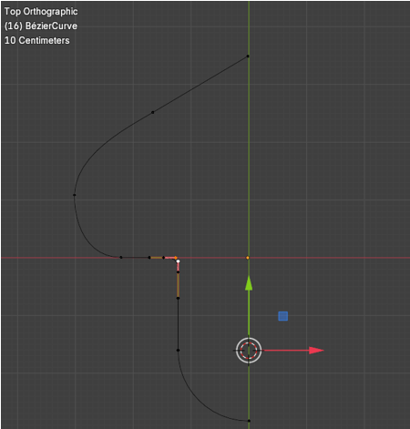
We want to now concentrate on the upper section of this curve. We are going to increase it in size. So, select this point here.
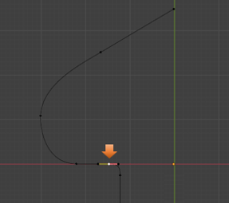
Move the Cursor to the Selected point
Press Shift and S to bring up the Cursor menu over lay. We want to select Cursor to Selected.
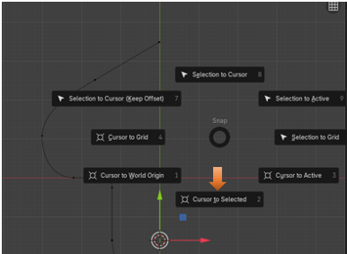
Your cursor with the colored move tool arrows should move to that point that we selected.
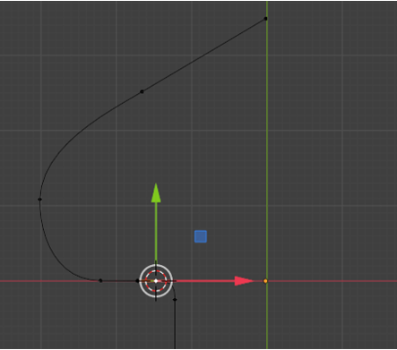
Moving the Cursor to the Vertical Center of View Port
The Vertical Center of the View Port is indicated by that straight green line that is sitting to the right of our Move Tool. We can move our cursor to this point by setting the cursor location for the X axis to be 0. So, the cursor will move right to the green line, and be siting directly across from the point on the controller.
Be careful, the setting for the Cursor is located in the View tab, of that panel to the right of the view port. So, will need to pop that panel open with the N key.
Now under 3D Cursor in this panel, inside of the View tab, set the 3D Cursor Location for the X to be 0.
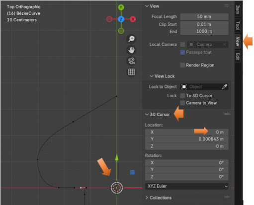
Now select these elements on the Curve, as it is illustrated in the image below.
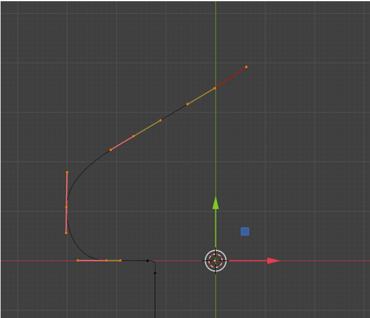
Now press the S key and start to scale this up
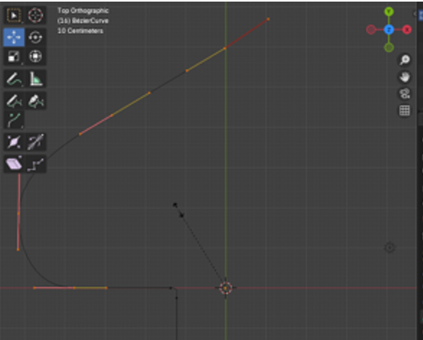
We want to try and realign this curve as best as we can. We can just align points with the G key. Try to line up these two points (as illustrated below) straight up and down from each other.
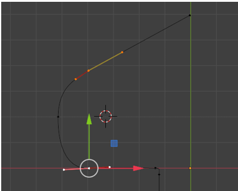
We just want a fairly nice curve for this side.
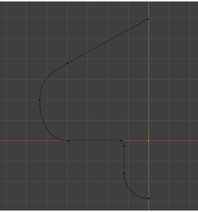
We want to select these two points here and make this handle to be a bit longer. Just take the move tool and scoot this whole section downward. This next image will show what this bottom section looks like before the move.
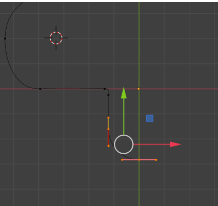
You can hit the Y key to make sure that it moves straight downward on the Y axis. This is what the bottom part looks like after the move.
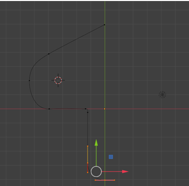
The Shape should look like this now.
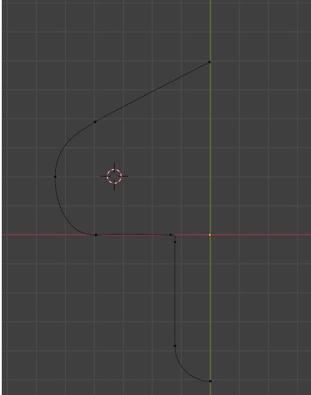
Ok, now this is just a short little tutorial here. But I want to stop here so that we can keep the Mirroring, and joining of the object inside of a separate tutorial.